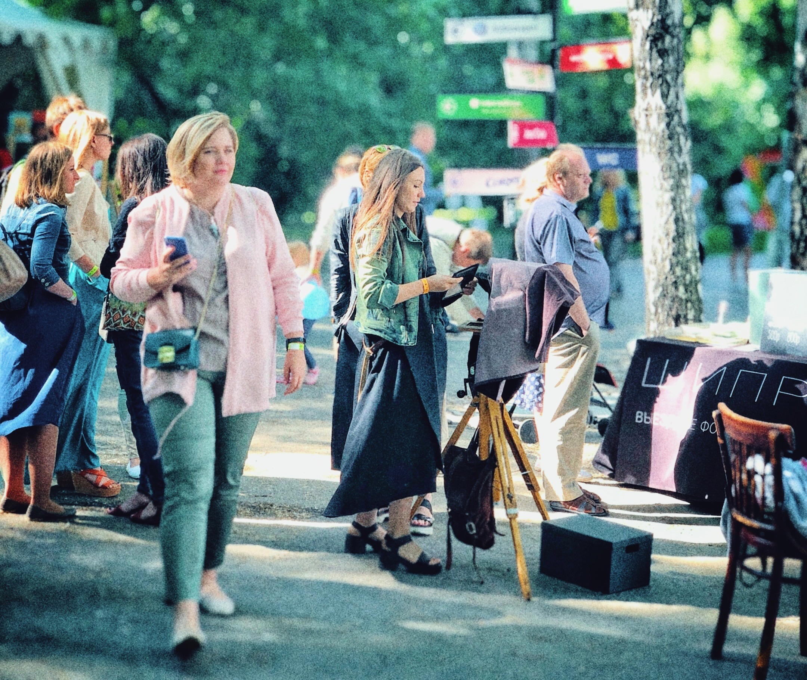

Зачем нужны эти вопросы и как они связаны с кризисом и современностью?
Размышляя о современном мире, об истории культуры, о сегодняшних событиях — я пришёл к мысли, что возможно, мы стоим на пороге нового мира и новой антропологии… глобального экзистенциального ЗАВТРА. Завтра не как пост-постмодернизма или ещё какого-нибудь «пере-изма», а вообще, новой формы человеческого существования.
На рубеже 20-21 веков человечество входит в новую реальность: крах «проекта МОДЕРНА» (в философском смысле термина) дополнился жизненной пустотой «проекта ПОСТМОДЕРНА» — этакой глобальной диктатурой культуры масс, как второй реальности, стремительно «пережёвывающей» всё и вся — от ценностей и смыслов до нашего быта и самого понятия «человек». Одновременно с этим — глобализация, виртуализация, ценностная эмансипация (стремление молодежи жить своей жизнью, не встраиваясь в традиционный контекст), технологизация, рост качества жизни (в бытовом смысле), биологические угрозы и непредставимая ранее мобильность в пределах планеты Земля.
И, по большому счёту, люди впервые встают перед вопросом самоидентификации и самоопределения. Нет, понятно, что сие и раньше волновало человека, но это было такими частными случаями на общем фоне встроенности и обусловленности масс «традицией», предзаданности смыслов и «прозрачной завершенности» картины мира каждого отдельного индивида. Сейчас же эти «волнения» приобрели массовый характер. И, в отличии от предшествующих эпох, сегодня у огромного количества людей (статистически значимого в рамках всей нашей популяции) есть реальная возможность с этим что-то сделать… то есть, прожить свою жизнь иначе.


Это значит, что наши частные экзистенциальные выборы впервые окажут влияние не только на нашу собственную жизнь, но и на историю в целом! А это, влечет за собой ответственность за осуществленный выбор. В любом случае. Ведь как говорил Сартр: «Я всегда могу выбрать, но я должен знать, что даже в том случае, если я ничего не выбираю, я тем самым все-таки делаю выбор».
Мировоззрение
Это значит, что на первое место выходит проблематика мировоззрения.
Мировоззрение — это такая штука, которая определяет наши действия, отношение к миру, а следовательно и самою нашу индивидуальную реальность. Ключевая проблема с ним заключается в том, что оно обычно «случайно». То есть, как правило мы не занимаемся формированием своего мировоззрения осознанно. Наши представления и убеждения основываются на семейных историях, на фрагментах прочитанных опусов в соцсетях, мнениях друзей, полунаучных клише и «стопудовых» (при этом никогда не проверяемых) истинах. В этом смысле, мы как пылесос — открой его и обнаружишь там кучу интересных субстанций, от ниток и монет, до обрывков текстов, новогодней мишуры и вселенской пыли. Только пылесосу всё равно, он будет работать и исправно выполнять свою функцию вне зависимости от состава этого «перегноя». А мы?
Если копнуть глубже, то мы увидим, что кажущаяся при поверхностном взгляде стройной и логичной картина мира, начинает рассыпаться и запутываться. Только тронь любое ключевое понятие, воспринимаемое нами как само собой разумеющееся, как тут же становится ясно, что мы ни черта не знаем. Причём, не знаем не в смысле того, что надо помнить кучу легитимизированных определений, а в смысле того, что на самом деле мы не знаем толком, что именно вкладываем в эти понятия-ценности, на чем они основаны и что нам с этим делать. Иначе говоря, на сознательном уровне наши убеждения оказываются непроявленными, а их несостоятельность в реальной жизни не сразу бросается в глаза, потому что трудно делать выводы из того, «что не получается» на основе того, «чего не знаешь».
Но это особенно очевидно становится именно сегодня, когда хаотичность мировоззрения становится причиной паники, истерии и тотальной неадекватности. Мы разучились думать о чем-то помимо хлеба насущного и привыкли полагаться на кажущуюся ценность информационного потока и государство, которое «должно». Нашими главными вопросами стали «почему» и «как», но мы забыли вопрос «зачем».
Мудрость Аристотеля
Если вспомнить Аристотеля и его теорию причинности, то мы увидим, что великий мыслитель выделяет четыре вида причин сущего: материальную, формальную, действующую и целевую. Четыре, а не только «почему».
- МАТЕРИАЛЬНЫЕ ПРИЧИНЫ: «то, из чего», causa materialis. Это собственно субстрат, материал из чего получаются вещи и события.
- ФОРМАЛЬНЫЕ ПРИЧИНЫ: «то, что», causa formalis. Это сущность, форма, тот образ который активно преобразует в нечто пассивную материю.
- ПРОИЗВОДЯЩИЕ ПРИЧИНЫ: «то, откуда», causa efficiens. Это тот, кто привносит форму в пассивную материю.
- ЦЕЛЕВЫЕ ПРИЧИНЫ: «то, ради чего», causa finalis. Это то, зачем делается то, что делается. Зачем производящая причина преобразует пассивную материю в соответствии с формальным замыслом.
Например, если взять процесс создания произведения искусства, то материальной причиной будут холст и краски, формальной — замысел автора, производящей — сам автор, а целевой — ради чего он это всё затеял. Вроде бы всё просто, мы как бы так и живем и всё это понимаем. Но вся штука здесь, что для Аристотеля целевая причина — основная, а самое главное, что она имеет смысл только в том случае, если потенция стремится к своему воплощению и к своему благу, одновременно реализуя благо вообще. То есть, если в процессе нет идеи общего блага, то тогда и процесса по сути нет, потому что он теряет смысл и разрушает самое себя.
Как бы это обьяснить… ну вот скажем, играют два чувака в шахматы. У каждого из них есть стремление к своему благу, к победе в игре. Но есть еще и общее благо, развитие игры, сияние ума, новые горизонты. Если один из них поставит свое благо превыше всего, даст в глаз для дезориентации соперника или нарушит правила, то игра исчезнет, ее просто не станет. Процесс потеряет свой смысл и перестанет быть самим собой. И у Аристотеля это вопрос физики, а не этики!
Беда в том, что для подобного мышления, осознавания целевой причинности — нужно думать. Не просто плыть по течению или рассчитывать свои поступки в режиме калькулятора, а именно думать. Что, в свою очередь, явно не самая сильная черта нашего времени.
Мартин Хайдеггер.
Распространение «заразы»
Поставленный вопрос имеет значение не только в личностном, субъективном плане для отдельного человека, но и для всех нас. Причём именно сегодня. Связано это не просто с тем, что человечество подошло к возможности активного вмешательства в антропогенез: днк, клонирование, искусственный интеллект, цифровое бессмертие, нейросети и тд.; и эти технологические прорывы, накладываясь на экзистенциальный и мировоззренческий хаос, создают опасность для биологической и культурно-исторической идентичности вида homo. Это связано еще и с тем, что в современных условиях «большой деревни» под названием планета Земля с нашей сумасшедшей мобильностью в онлайне и в оффлайне любая «зараза» распространяется очень быстро. Биологическая, информационная, идеологическая… любая.
Это в свою очередь глобально влияет на всю политическую и управленческую мировую систему. Не на российскую, не на французскую или иранскую, а на всю целиком. Генералы, как водится, всегда «готовятся к прошедшей войне». Что вполне естественно, ведь привычка опираться на собственный опыт (читай прошлое) уже давно стала надёжным средством взаимодействия с миром. И даже тогда, когда в основе такого взаимодействия лежал не опыт, а традиция — прошлое было в центре этой оптики.
Но можем ли мы сегодня позволить себе такой подход в отношении ожидающих нас перспектив? Ясно дело, что во все времена люди считали свою эпоху особенной, но что, если сегодня именно тот случай? Никогда прежде люди не выходили на плацдарм вмешательства в саму природу человека, через био- и сете-технологии, никогда прежде человечество не стояло на рубеже изменения самих основ социума и жизни на всей Земле.
Идеология
Либеральный проект, как глобальная идеология, очевидно претерпевает кризис, если не сказать крах. Этот путь вслед за фашизмом и коммунизмом сдает свои позиции под влиянием биологических, политических, финансовых, этнических и даже психологических факторов. Потому что такая система (в ее сегодняшнем виде) способна адекватно функционировать и справляться с серьезными кризисами только при реальном наличии на частном уровне подавляющего числа осознанных субъектов, личностей в полном смысле этого слова. А их в нужном количестве нет и в помине! Это величайший миф либерализма, который рассыпается прямо сейчас, прямо на наших глазах. Потому как это просто идеология, даже не идея, а идеология и только. Которая, кстати, как любая идеология кем-то придумана, кому-то нужна и кем-то поддерживается.
В основе любого общества лежат мифы, метаистории и целый комплекс идей и их интерпретаций. Но идеи и мифы сложная штука — это динамические сгустки смыслов, выходящие за пределы прямолинейной рациональности, которые не схватываются во всей полноте привычным здравым смыслом. Так на сцену истории выходит идеология.
Что такое идеология? Если представить себе ключевые идеи и понятия (Бог, реальность, справедливость, свобода, власть, человек и тп) как хаотичную фигуру движения карандаша по бумаге (динамичное многообразие мыслей, чувств и событий), то идеология — это проекция такого клубка разноцветных нитей на монохромную прямую линию. Причём линию как вектор, то есть направленную к конкретной, пусть и не всегда очевидной цели. Идеология — это всегда «грустно и нехорошо». И не потому, что нас пытаются к чему-то принудить — все и всегда пытаются всех к чему-нибудь принудить, чего тут закатывать глазки (да и не может ни одно государство жить без идеологии). А потому, что идеология — есть результат тотального упрощения, выхолащивания живых смыслов до клише и удобных догматов, не имеющих ничего общего с действительностью… как в примере с внешне транслируемым представлением либерализма о том, что все люди (ну или большинство) — осознанные и ответственные личности, способные принимать разумные решения, на основе адекватного анализа ситуации. Нет их, сука, нет! Когда появляются такие люди, то мир их узнает как великих святых, подвижников, мыслителей и государственных деятелей. Много вы таких знаете за всю нашу историю?
«Свет разума находится со стороны тех, кто стремится снять шоры с глаз».
Пьер Бурдьё.
Как утверждал Андрей Пелипенко, наш российский философ и культуролог человечество стоит на пороге структурной трансформации логоцентрической модели ментальности (формировавшей наше бытие последние 3 тысячи лет) во что-то принципиально новое. Это «новое» может стать очередным этапом развития разума в нашей точке вселенной. Может. А может и не стать. Потому что это «новое» может обойтись без человека. Не в смысле истерических экзальтаций в духе «боже, мы все умрем», а в том смысле, что мы можем и перестать быть людьми.
Несмотря на мою нелюбовь к постмодернизму, озвученные в рамках этой парадигмы идеи о «смерти человека» имеют под собой разумную основу, если и не фактологическую, то эвристическую точно.
Получается, чтобы не выплеснуть с водой ребёнка, нам, современным людям очень нужно понять кто мы такие есть… Как бы утопично-пафосно это ни звучало. Логика разворачивания технологических и цивилизационных процессов такова, что остановить их мы не в состоянии (да и нужно ли?). Но вот определить некую константу “H” (homo), которая станет критериальным условием внедрения «научной фантастики» в жизнь, ориентиром для разумной политики, а самое главное необходимой чертой частной жизни каждого — мне кажется вполне посильной задачей.
Мы частенько думаем, что наша жизнь плохая. И даже те, кто сейчас начнет возмущаться, дескать я живу в единении с миром, смотрю на жизнь позитивно и, вообще, счастлив со страшной силой, вот только коронавирус карты спутал — будут не очень честны (за редким исключением). Мысли о том, что че-то как-то не алё и не мешало бы, чтобы всё вокруг было устроено как-то по-справедливее (по отношению ко мне любимому) никогда не оставляют людей. И технологии позитивного мышления тут не сильно помогают, тем более, что они, как правило, полная хрень.
Причем вся ирония ситуации в том, что этот внутренний пассаж о «плохой жизни» большое заблуждение. Если посмотреть непредвзято, то, что мы увидим? Хочешь есть — пожалуйста, любая еда на выбор. Заработать денег — ну, может любой и это не так трудно, во всяком случае, на жизнь хватит. Деятельность — да ради бога, всё, что заблагорассудится. Отношения — без проблем, никаких ограничений. Самопроявление — заведи инстаграм и самопроявляйся без остановки. У нас как бы всё есть! И в этом проблема.
«Вселенная-25»
Лет 50 назад американский ученый Джон Кэлхун провел эксперимент с популяцией мышей под названием «Вселенная-25». Им были предоставлены идеальные условия: еда, секс, лечение, комфортная среда, безопасность. И, несмотря на первоначальный бурный рост, через несколько лет популяция вымерла. Сколько раз не повторяли этот опыт — результат один и тот же. Почему? А потому, что незачем. Незачем жить и развиваться, когда всё есть (не в розовых мечтаниях, а по факту, биологически). Нет природного смысла, ну, а формировать собственные смыслы мыши неспособны.
Но мы то способны.
Расхожая фраза «смысл жизни в самой жизни» — чушь. Нет в жизни никакого смысла, если мы его туда не привнесем в своих собственных ладошках (или не воспримем его от иных «инстанций»). Особенно сегодня, когда чисто природный смысл растворяется в «изобилии» современности и это «изобилие» начинает проминать под себя реальность, привнося опасности, которые может и не новы, но в силу масштаба и иных характеристик социума оказываются глобальными.
Я человек, я посредине мира,
За мною — мириады инфузорий,
Передо мною мириады звезд.
Я между ними лег во весь свой рост —
Два берега связующие море,
Два космоса соединивший мост…
А.Тарковский.
Человеческий капитал
А посему, предлагаю серьезно задуматься над вопросом, что такое человек? Причем задуматься практически, целенаправленно, конкретно. Для этого я сформулировал совокупную категорию — «Человеческий капитал». Для меня человеческий капитал — есть мера воплощенной в человеке способности производить ценности и смыслы в процессе творческой деятельности (творческая деятельность в данном контексте — любое осмысленное проявление ума, нацеленное на созидание). Основывается Человеческий капитал на пяти китах:
- ТАЛАНТ — индивидуальная трансценденция, предзаданность личного проекта. Даётся Богом (природой), но развивается самим человеком.
- ГАБИТУС — история, вписанная в тело и ум человека, своеобразное единство биологического, социального и культурного в индивиде. Он (габитус) определяет (значительно) художественный вкус, манеру поведения, систему ценностей, и, даже предпочтения в еде и одежде. Можно сказать, что габитус (по выражению автора термина Пьера Бурдьё), это как чувство собственного места, сформированное предшествующим опытом: люди по-разному ощущают, на что они могут претендовать, а что не совсем для таких как они. И габитус заставляет их самих сортировать открывающиеся возможности на те, на которые они могут претендовать, и те, на которые не могут! Закладывается средой, семьей, близким социумом.
- КУЛЬТУРНЫЙ КАПИТАЛ — объём знаний, навыков и представлений (в виде понимания и внутренних аргументаций), который удалось наработать в течение жизни. Нарабатывается самостоятельно, при определенном участии семьи. Автор концепта семейства капиталов Пьер Бурдье выделяет экономический капитал (вслед за Марксом), культурный, социальный и еще, иногда, символический.
- ПАССИОНАРНОСТЬ — личный объем энергии намерения; способность активно добиваться поставленых целей. Определяется генами и исторической средой. Но может, видимо, всё-таки развиваться. Первоначально — это термин этнографии Льва Гумилева, я его заимствовал и переложил на индивидуума. У Гумилева — это избыток биохимической энергии, активность, проявляющаяся в стремлении человека к цели, в способности к сверхнапряжениям ради достижения этой цели.
- MODUS BONUM — масштабное видение мира, основанное на благе; осознанное, не-наивное проявление доброты, как общей интенции личности, проявляющейся тогда, когда это необходимо. Скорее всего закладывается семьей, ну а затем уже является результатом собственного сознательного выбора. «Масштабность основанная на благе»: способность личности мыслить глобально (выходить за пределы сиюминутного «Я» и местечковых интересов), причем делать это обязательно на базе этики, а не только ума и целесообразности. «Не-наивное проявление доброты», как осознанной необходимости: речь не просто о добрых поступках или благих мыслях, ведь благими намерениями известно куда дорога выложена. Речь именно об осознанности в действиях, основанной на понимании причин, целей и возможных результатов того добра, которое ты хочешь «причинить». Добро как мотивационный базис, как общая интенция личности: естественное и органичное проявление доброты как причины деяний и как черта характера человека. Почему включена эта категория в состав «человеческого капитала»: во-первых: так как я считаю, что человек обладающий ею, при прочих равных условиях, будет сильнее и значительнее, чем человек ею необладающий; а во-вторых, ее наличие будет напрямую влиять на направление развития человека, на его социальные и личностные проявления. И, в конечном итоге, на здоровье общества в целом.
Предваряя вопросы, поясню, почему я не включил сюда экономический капитал, сиречь деньги. Дело в том, что для меня, это менее важная штука (без умаления важности и ценности экономических достижений). Просто, бизнес или карьера — это на первоначальном этапе удовлетворение простых амбиций и собственных материальных потребностей, а в дальнейшем они превращаются уже в самореализацию, и в таком ключе, раскрываются в других категориях (ну или не превращаются, но это уже клиника).
Практическая ценность этой концепции видится мне в формулировании конкретным человеком осознанной личной стратегии становления по всем пяти векторам. Что, теоретически должно привести к формированию цельной и значимой личности.
Если посмотреть внимательно на все пять пунктов, то мы увидим, что в современном обществе прерогатива отдаётся четвёртому — пассионарности. Первый (талант) эксплуатируется, второй (габитус) замалчивается и уравнивается, а третий (культурный капитал) и пятый (modus bonum), старательно игнорируются.
Ясное дело, что глобальным структурам и мировой системе такое «становление личности» нахрен не сдалось, а любая система, как известно, всегда сильнее отдельного человека. Но это совсем не мешает каждому, на своём частном уровне сделать свой выбор и двинуться по предложенному мной пути. А когда таких людей, личностей в полном смысле этого слова, становится много, то любые манипулятивные стратегии любых идеологических систем сильно теряют в эффективности. Потому что личность получает повышенный иммунитет к «лапшам на ушах», а самое главное, гораздо более широкое пространство для манёвра в своей личной жизни.
Театр военных действий
Иначе говоря, театр военных действий современных кризисов разворачивается внутри человека, а не вне его. И все социальные проявления этой борьбы в виде споров, дискуссий, теорий, концептов и манипуляций — есть не более, чем отражение внутреннего диалога с самим собой. Это не значит, что всё это «социальное» не имеет смысла. Очень даже имеет, поскольку задает правила игры, определяет текущую финансово-политическую ситуацию, даёт почву для размышлений и создает экзистенциальный фон. И тем не менее, ответ на вопросы «кто мы?», «куда идем?» и «как мне жить полной жизнью?», судя по всему, лежит внутри нас самих.